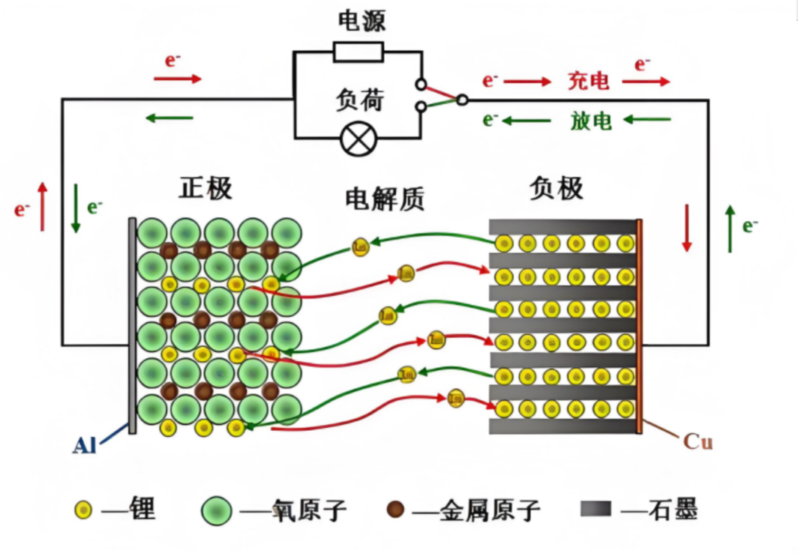
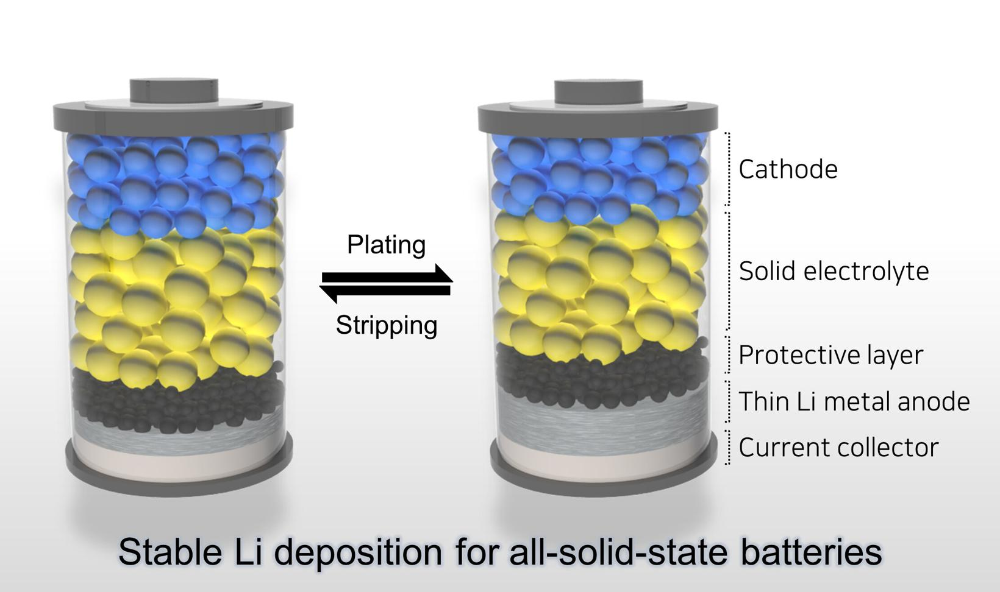
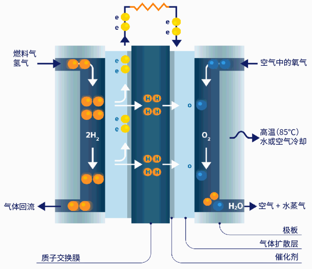

小米汽车生产线的三大优势
1. 自动化与智能化:
- (1) 超高机器人密度: 在焊装车间，自动化率普遍超过 95%。


- (2) 全程自动化物流: 由 AGV(自动导引运输车)、EMS(空中输送系统)和 robotic carriers (机器人搬运车)完成。

- (3) 自动化质量检测: 广泛应用机器视觉系统进行自动质量检查。
2. 效率
- (1) 惊人生产节奏: 每 76 秒下线一辆车，日产量为 1000 辆这个速度使得小米能够在230天内完成10万辆车的下线，创下了新车企的最快纪录。
- (2) 高效工艺技术: 传统制造工艺下需要焊接 72 个部件才能完成的大模块，在压铸工艺下只需一次压铸即可完成，生产时间缩短近一半。
- (3) 快速换线能力: 凭借标准化、模块化设计，小米智能工厂极大提高了产线柔性，可实现快速换线生产。
3. 绿色环保实践
- (1) 节能减排: 房顶铺设光伏板，年绿色发电 1640 万度。小米泰坦合金含 30%循环铝。
- (2) 资源循环利用: 涂装车间废气处理率 99%，污水回收处理系统循环利用水资源。
- (3) 绿色工艺: 采用一体化压铸技术减少了生产过程中的焊点数量和工时, 不仅提高了生产效率，也降低了能源消耗。
Part2 燃油 vs 电动
| 燃油汽车 | 电动汽车 | |
|---|---|---|
| 能源效率 | 能源效率低 (30-40%) | 能源效率高 (>85%) |
| 环境影响 | 排放温室气体和污染物 | 零排放 |
| 能源补充效率 | 加油仅需5分钟 | 快充仍需 30+ 分钟 |
| 续航 | 续航稳定 | 续航受环境影响，可能衰减 |
| 运行成本 | 油费高 | 电费低 |
| 购买成本 | 技术成熟, 成本低 | 电池成本高 |
| 载重 | 燃油轻便, 适合重载长途 | 电池重, 影响有效载重 |

Part3 电动汽车电池
当下两种电池的比较——两种锂电池
| 三元锂电池 | 磷酸铁锂电池 | |
|---|---|---|
| 能量密度-续航 | 能量密度高, 续航高 | 能量密度低, 续航低 |
| 安全性 | 高温或碰撞时易燃烧 | 化学结构稳定, 难分解 |
| 寿命-循环适用次数 | 1500-2500 次 | 3000-6000 次 |
| 温度 | 低温下能量衰减较小 | 低温下能量衰减明显 |
| 成本 | 含 Ni、Co、Mn、Al 的化合物, 贵 | LiFePO₄ 中 Fe、P 丰富且便宜 |
| 环境影响 | 含重金属, 较不环保 | 不含重金属, 较环保 |
总结: 要跑得远、不怕冷, 选三元锂；要更安全、更便宜、用得更久, 选磷酸铁锂。

三种未来电池技术——固态电池
优势
- 极高的安全性: 无泄漏、无腐蚀; 不可燃 / 耐高温; 抑制锂枝晶从而防止枝晶刺穿隔膜导致的内短路。

- 高能量密度: 固态电解质本身可以充当隔膜的功能, 使得电池结构更紧凑; 兼容高容量电极材料, 可更安全地使用金属锂作为负极。
- 更长的循环寿命: 超过 10000 次。
- 更宽的工作温度范围: 可在 >100℃ 环境下稳定工作。
- 简化封装系统: 减少冷却系统与防爆结构
劣势
- 固-固界面问题: 电极与电解质均为固体, 易产生空隙; 两者间因化学性质不兼容而增加电阻。
- 制作成本昂贵: 锗、镧昂贵; 生产工艺复杂。
- 快充性能目前受限。

三种未来电池技术——钠离子电池
优势
- 成本低廉: 原料丰富且分布均匀, 储量是锂的 420 倍以上。
- 安全性较高: 热稳定性高, 不易起火爆炸。
- 宽温域性能优异: -40°C 能保持 70% 以上的容量, 适合高寒地区。
劣势
- 能量密度低: 质量——Na 120-160 Wh/kg 低于 Lfp 160-200 Wh/kg, 远低于三元锂电池; 体积——钠离子半径大, 空隙大
- 寿命较短: 对正极造成更大的体积膨胀和应力, 易粉化坍塌。

三种未来电池技术——氢燃料电池
优势
- 高能量密度与长续航: 质量能量密度为汽油三 3 倍, 锂电池 100 倍以上; 轻松实现 800+ 公里续航。
- 真正的零排放: 反应物只有水。
- 良好的环境适应性。
劣势
- 成本高昂: 制氢——电解水; 储运——高压压缩、液化; 加注——加氢站投资成本高达千万, 涉及高压高危设备。
- 全周期能效较低: 电 → 电解水 → 压缩/液化 → 运输 → 燃料电池发电, 大量能量以热能形式散失, 效率仅为 30-40%。
